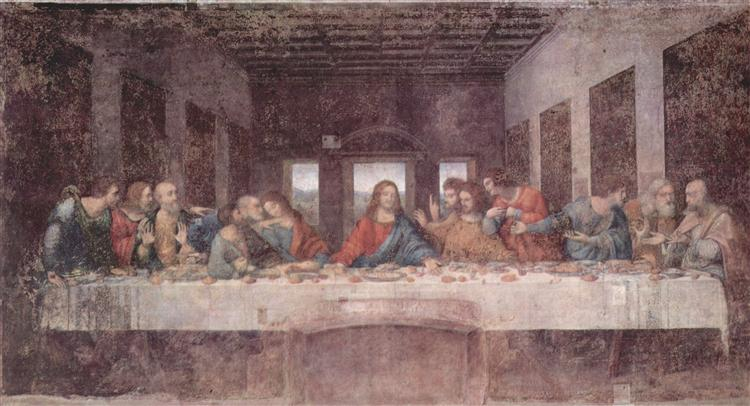
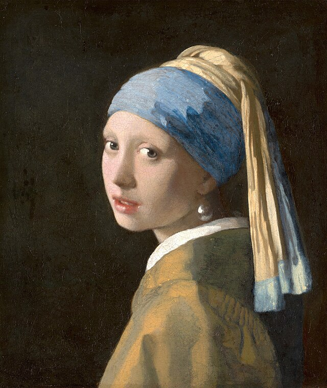
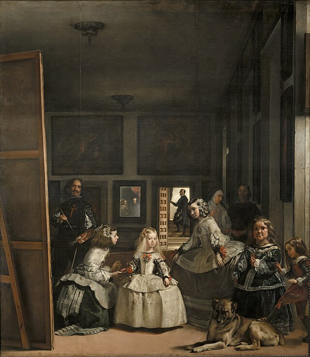
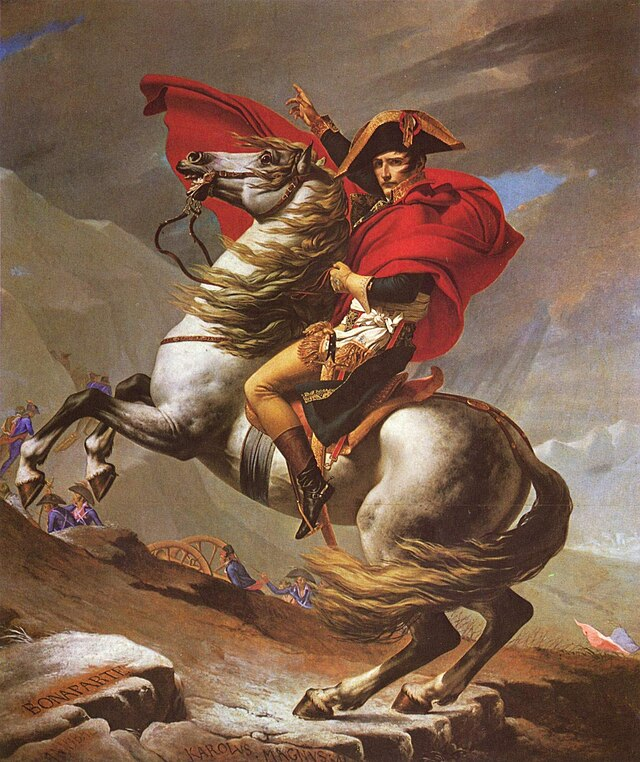
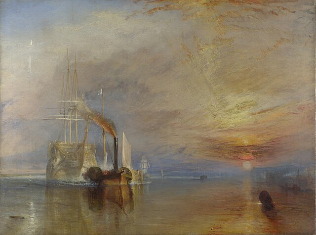

Mona Lisa
Leonardo da Vinci

Shakuntala
Raja Ravi Varma

The Last Supper
Leonardo da Vinci

Ajanta Cave Mural
Unknown Artists

The Birth of Venus
Sandro Botticelli

Girl with a Pearl Earring
Johannes Vermeer

Las Meninas
Diego Velázquez

Napoleon Crossing the Alps
Jacques-Louis David

The Fighting Temeraire
J.M.W. Turner